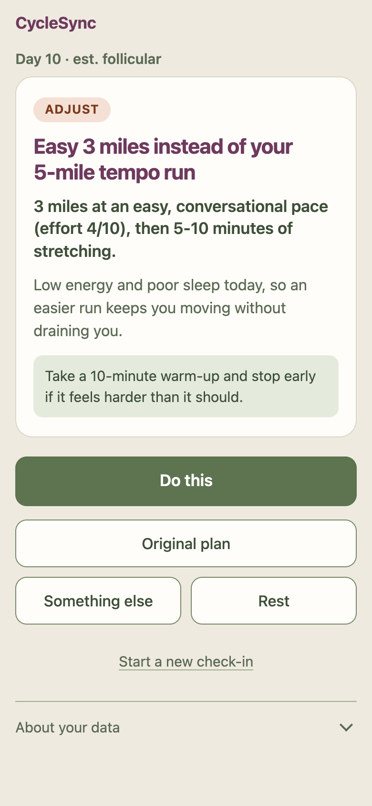
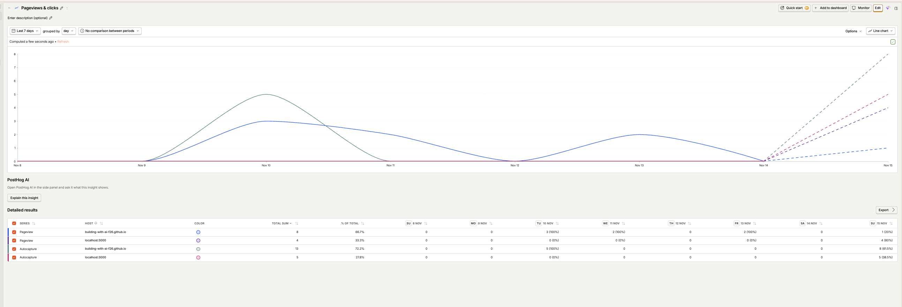

A 20-second morning check-in that tells active women whether to keep, adjust, swap, or rest today's planned workout, based on how they actually feel and where they are in their cycle.
Current Status: Build 3: live on Vercel for invited testers, with real AI recommendations, safety rules checked in code, and data saved in Supabase.
Demo: A recommendation card from the Build 3 app (test data):

Who is this for? A woman in her 20s or 30s who works out 3–5 times a week, tracks her cycle, and plans her workouts ahead. First users: me, plus a few friends who match this profile.
The painful "Before" workflow: She checks her period tracker, notices low energy or cramps, and makes a gut call about whether to push through, scale back, or skip her planned workout. Nothing connects how she feels to what she planned.
The "After" workflow with this product: She gets a notification-style check-in each morning. She taps her energy (1–5), symptoms (cramps, bloating, headache, fatigue, heavy flow, none), sleep (good / ok / poor), and soreness, then confirms today's planned workout. She gets one recommendation (Keep / Adjust / Swap / Rest) with a specific workout and a one-line reason, then taps Do this, Do my original plan, Something else, or Rest.
Adjust goes both ways: On low days the workout gets easier. On high-energy days she gets encouragement and a small optional add-on, but never when sleep is poor, soreness is high, or symptoms are significant.
Product principles: Recommendations are based on how she says she feels, with cycle day as context rather than strict cycle-phase rules. CycleSync collects minimal health data, uses anonymous IDs, and masks health fields in analytics.
Riskiest Assumption: That women will keep doing a daily check-in after the first week. Tested in Build 3.
Biggest technical risk: The AI gives generic or unsafe advice instead of specific, safe, feelings-first recommendations.
How I tested it:
Result: All 7 cases pass on the first try.
Simple Architecture:

Hosting: Vercel (free plan). The app's api/ folder already fit Vercel's format, so it went live without a rewrite. I didn't pick Render because its free plan sleeps after 15 minutes, which would make the first morning check-in slow. Pushing to main deploys the site, and a bad deploy can be rolled back in one click.
Database: Supabase (free plan). On a host like Vercel, files the server writes disappear when it restarts, so check-ins need a real database. Every table has Row Level Security turned on. The page never writes to the database itself: only the app's server does, using a secret key that lives in Vercel's settings and never in the code. The free plan keeps no backups, so I export the tables by hand.
Access: personal invite links instead of sign-in.
Security: all 7 class checks pass (details in SECURITY.md).
npm audit found 0 vulnerabilities.Privacy: analytics never record health answers. Session replay hides the health screens and the recommendation card. All tester data is deleted at the end of the semester.
Design: after testing on my own phone, the app got a new sage and plum look. Going back to a question you already answered now shows a button to move on, so you're never stuck. A short "The science behind CycleSync" panel explains how recommendations work.
Architecture (Build 3): [Invite link] → [Check-in web app on Vercel] → [Server: invite check, rate limits, safety rules in code first] → [Claude Haiku 5.5 via OpenRouter] → [Code checks, retry, rule-based fallback] → [Card + response saved in Supabase]
gh .pkg installer instead. Installing Claude Code with npm gave a permission error, so I used the native installer. I also had to set up my PATH. PRD changes for this prototype: energy is Low / Ok / High instead of 1–5, soreness isn't asked yet, and the poor-sleep and cramps rules are planned for Build 2..env; how tokens become cost per run; rules in a prompt aren't enough, important rules need checks in code, and testing catches what checks miss..env. The check-in felt like a survey, so I redesigned it. The cramps safety rule was too dramatic. AI testing led to new code checks. App clicks weren't showing in PostHog at first, because almost every button was inside a hidden health area; I made sure clicks on non-health buttons are tracked. PRD changes: web app with the Shortcut as the nudge; phases shown only menstrual, follicular and luteal; no phase for hormonal contraception.Decisions so far: